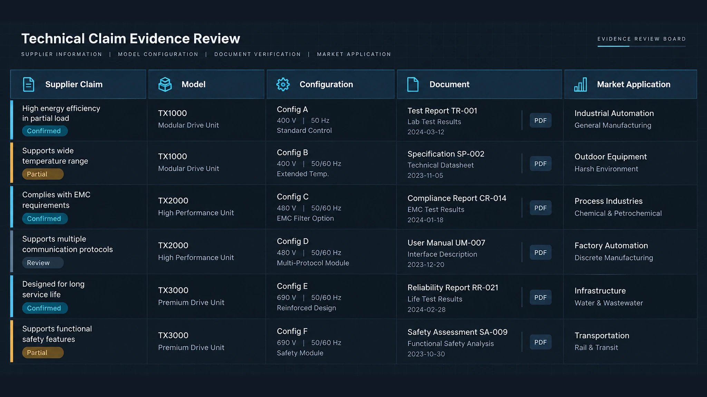
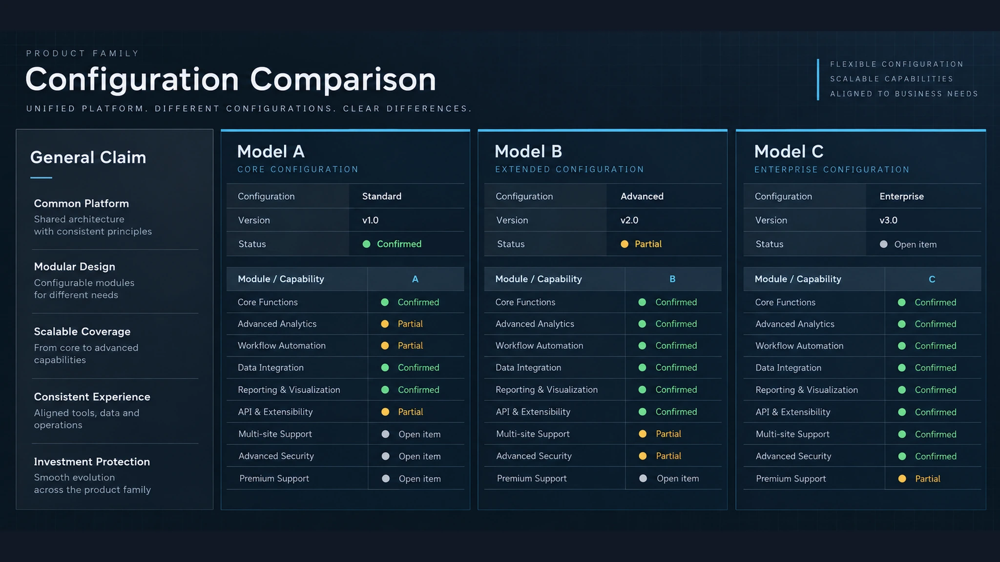
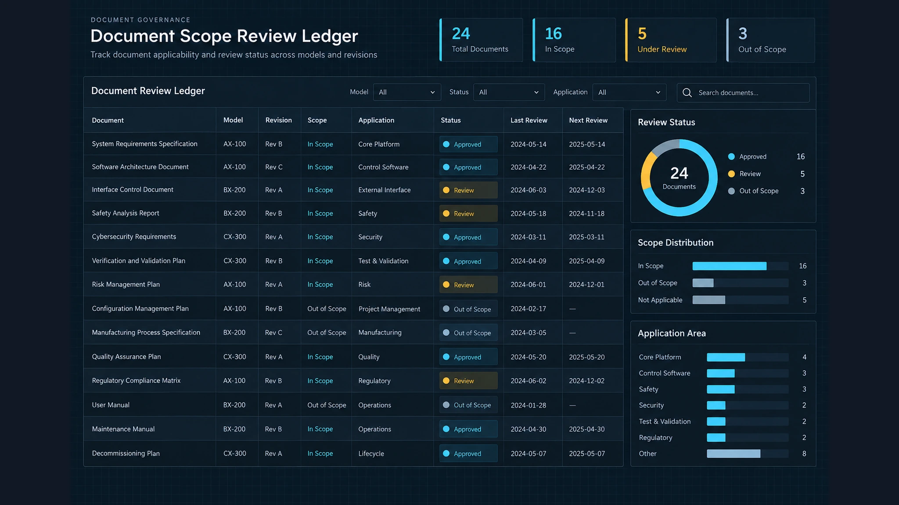
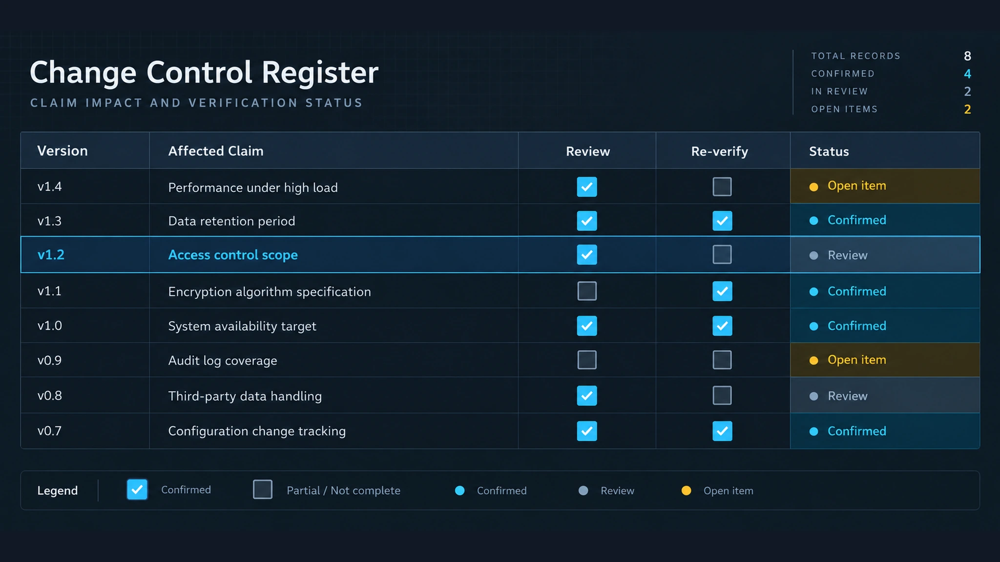

通过证据矩阵，将智能锁供应商声明与实际型号、配置版本、支撑文件及目标市场要求逐项对应，降低信息误判。
1. 决策边界

供应商的一句话声明并不等于已经核验的产品事实。首先要明确这句话具体声称什么，以及需要哪些证据支持。核验边界应连接五项内容：书面声明、具体型号或型号系列、硬件和软件配置版本、支撑文件，以及产品实际使用的目标市场和应用场景。
这样可以避免把系列宣传语直接当成所有型号和所有安装场景的证明。每条记录应标记为已确认、部分确认、未确认或不适用。矩阵的作用不是脱离条件给供应商打一个总分，而是说明哪些信息可以依赖、依赖的条件是什么，以及还存在哪些限制。
2. 声明与型号

每条重要声明都应对应到可识别的型号或型号系列。记录原始声明及来源、型号编号、硬件版本、固件或软件版本、报价配置中包含的功能，以及供应商明确写出的条件或排除项。
例如，“支持手机开锁”不应自动套用到一个产品系列的全部锁具上。需要确认该功能是否依赖特定读卡器、网关、固件、应用程序或管理平台。应区分标准具备、仅在明确配置下具备，以及目前还没有对应型号的概括性描述。只有前两类可以进入型号级证据，条件性证据必须保留其配置条件。
3. 配置基线
单独的型号名称通常不足以核验智能锁需求。为每个被评估对象建立配置基线，至少按项目需要记录锁体与门型、凭证或读卡器技术、机械接口、供电和运行条件、有线或无线通信方式、网关或控制器依赖、固件和应用版本、管理平台或接口，以及随附配件和安装限制。
配置基线要区分已确认、拟定和仍需书面澄清的内容。如果某个功能依赖配件或软件服务，应记录这种依赖，而不能把它当成锁体本身固有的能力。不同版本之间不能默认继承证据；配置变化后，相关声明、文件引用和市场判断都应重新检查。
4. 文件范围

支撑文件只有在适用范围与待核验声明相匹配时才有意义。每份文件应记录标题和编号、出具组织、日期和版本、引用的型号或配置、覆盖的功能或要求、测试或评估条件、文件写明的地域或市场范围，以及失效、替换或被取代信息。
产品手册、宣传册、安装说明、集成文件和测试记录回答的是不同问题，不能相互替代。只有文件链接而没有型号关系是不完整的；只有型号而没有对应配置也不完整。文件没有写明的条件应标记为缺失范围，而不是自行扩大解释。
5. 市场应用
同一项技术功能在不同市场和项目中可能需要不同的判断。评估前应明确建筑或项目类型、门和安装条件、凭证及用户流程、必要集成、联网或离线运行条件、本地语言和文件要求、项目方提出的市场要求，以及安装、支持和维护假设。
本节用于描述项目要求，不用于作出未经核验的合规或适配承诺。如果某项市场要求需要当地机构、测试机构、平台方或项目顾问确认，应作为开放核验项记录。市场适用性是“已定义的应用场景”与“已核验的配置”之间的关系，不是永久附着在供应商或产品系列上的标签。
6. 变更控制

型号、部件、固件、应用程序、文件或项目场景发生变化后，原有证据可能不再适用。以下变化应触发复核：型号或硬件版本变化，读卡器、网关、控制器或配件变化，固件或管理软件更新，支撑文件替换或修订，安装环境或应用变化，市场要求或项目规格变化，以及开放项获得新证据。
每次变更记录日期、变更对象、变更前后状态、受影响的声明和需要重新核验的内容。保留原有文件引用，使决策过程可追溯。变更控制不是要求每次小改动都重写全部资料，而是识别哪些声明和条件受影响，避免未经范围检查就继续沿用旧证据。
在做出采购或部署判断前，还应确认文件确实覆盖所声明的功能，报价中是否包含必要的配件和平台依赖，安装条件是否与目标项目一致，以及每个开放项是否已经指定负责方。发生变更时，应针对受影响的记录、市场假设和审批结论重新复核，而不是只替换一份文件。
7. 证据矩阵
为保持与英文版一致的信息深度，每条记录还应写明声明原文及来源、具体型号和型号系列、硬件版本、固件与软件版本、包含的功能及排除项、读卡器、网关或控制器依赖、文件编号和版本、测试或评估条件、地域范围、目标市场与应用场景、开放项、负责方和下一次复核日期。这样才能区分标准配置下成立的证据与带条件成立的证据。
建议每条重要声明或要求单独占一行：
| 字段 | 用途 |
|---|---|
| 声明 ID | 对被核验声明的稳定引用 |
| 供应商声明 | 原文或受控摘要 |
| 来源 | 报价、邮件、宣传册、手册或记录 |
| 型号 | 具体型号或型号系列 |
| 配置 | 硬件、软件、配件和版本条件 |
| 文件 ID | 可追溯的文件及版本 |
| 证据状态 | 已确认、部分确认、未确认或不适用 |
| 市场/应用 | 已定义的使用和目标市场 |
| 开放项 | 缺失信息或待澄清事项 |
| 负责方 | 负责跟进的人员或责任方 |
| 复核日期 | 下一次检查日期 |
表格填完后，请用同一决策规则逐行核对：供应商说了什么，涉及哪个型号，在什么配置下成立，哪份文件支持，以及是否适用于定义的市场和应用。“可提供”或“支持”如果没有范围和条件，就不是完整的核验结果。
8. 结论
当每条重要声明都与实际型号、明确配置、可追溯文件和指定市场应用建立对应关系时，智能锁供应商评估才更可靠。证据矩阵应持续展示已确认、带条件、待补充和因变更需要复核的信息，避免把概括性产品语言直接转化为无依据结论。
联系我们
提交供应商声明清单、型号信息、配置细节和现有支撑文件，即可围绕指定应用与目标市场建立核验矩阵。